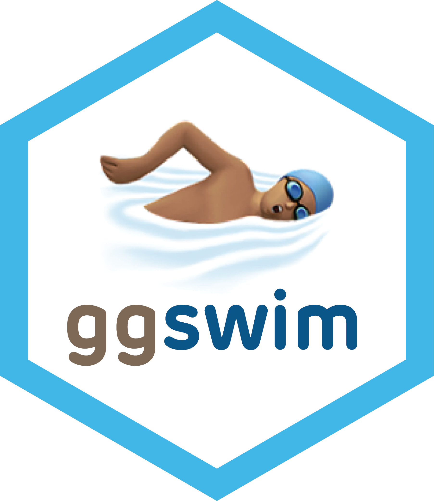
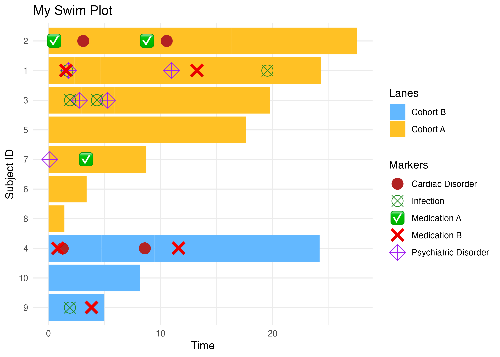

The ggswim package provides a convenient set of commands to easily create “swimmer” plots.
Installation
ggswim is in its very early stages, but in active development! Expect to see many changes in the near future to the API and documentation.
You can install the development version of ggswim like so:
devtools::install_github("CHOP-CGTInformatics/ggswim")Background
ggswim provides developers with a set of commands that make it easy to create beautiful swimmer plots using the architecture they may already be familiar with in ggplot2. The main functions that power ggswim are wrapped around core ggplot2 functions, leveraging the ability to add layers at a whim for whatever the developer’s display requires.
The ggswim package reduces the complexity behind making reproducible legend displays that correctly show points of interest and are key to telling the story of the swimmer plot.
Let’s show a quick example of how this works below!
A Sample Data Set
First we’ll define a few sets of data to work with:
-
patient_data: a dataframe containing per-patient, record-level data -
dose_data_a&dose_data_b: a dataframe with two doses corresponding to multiple potential time points for the patients inpatient_data -
dose_type: a dataframe with two drug distribution method types identified using labels and names
set.seed(123)
patient_data <-
tibble::tibble(
id = 1:4,
trt = rep_len(c("Drug A", "Drug B"), length.out = 4),
time_to_last_followup = c(5, 2, 4, 7),
time_to_death = ifelse(id %% 2, time_to_last_followup, NA),
end_time = c(5, 2, 4, 7)
) |>
dplyr::mutate(time_start = 0) |>
tidyr::pivot_longer(
cols = c(time_start, time_to_last_followup),
values_to = "time",
names_to = "treatment_group"
)
dose_data_a <- tibble::tibble(
id2 = c(1, 1, 1, 2, 2, 2, 3, 4, 4, 4),
type = sample(c("Dose I", "Dose II"), 10, replace = TRUE),
time = c(0, 1.5, 2, 0, 0.5, 1, 1.25, 2, 3, 7)
)
dose_data_b <- tibble::tibble(
id3 = c(1, 1, 2, 3, 4),
type2 = sample(c("Dose III", "Dose IV"), 5, replace = TRUE),
time = c(0.5, 0.75, 0.25, 3, 6)
)
dose_type <- tibble::tibble(
id4 = c(1, 2, 3, 4),
label = c("💊", "💉", "💊", "💉"),
name = c("Method A", "Method B", "Method A", "Method B"),
time = c(.15, 0.1, 2.25, 5.5)
)
library(ggswim)
library(ggplot2)
p <- patient_data |>
ggswim(
aes(
y = id,
x = time,
fill = trt
),
width = 0.1
) +
add_marker(
data = dose_data_a,
mapping = aes(
x = time,
y = id2,
shape = type,
color = type
), size = 3
) +
add_marker(
data = dose_data_b,
mapping = aes(
x = time,
y = id3,
shape = type2,
color = type2,
), size = 5
) +
add_marker(
data = dose_type,
mapping = aes(
x = time,
y = id4,
label = label,
color = name
),
label.size = NA, fill = NA, size = 5
)
p +
ggplot2::labs(x = "Time", y = "Subject ID", color = "Markers") +
ggplot2::ggtitle("My Swim Plot") +
ggplot2::theme_minimal() +
ggplot2::scale_color_manual(
name = "Markers",
values = c("firebrick", "tomato", "orange", "chartreuse2", NA, NA)
) +
ggplot2::scale_shape_manual(
name = "Markers",
values = c(19, 15, 8, 18)
) +
ggplot2::scale_fill_manual(
name = "Lanes",
values = c("steelblue", "cyan", "skyblue", "steelblue4")
)